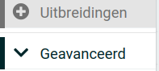
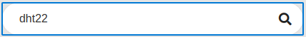
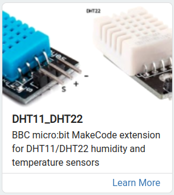
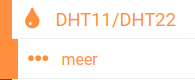
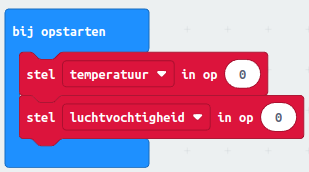

5. Temperatuur meten
We gaan vandaag leren over een slim onderdeel dat de temperatuur en vochtigheid in een kamer kan meten. Het heet de DHT22 sensor en is heel handig! We gaan ook leren hoe we de computerprogramma's kunnen schrijven om de temperatuur te meten.
Inhoud
Wat je nodig hebt
Micro USB aan Standaard USB kabel (is onderdeel van de bovenvermelde kit).
Een DHT22.
Laptop met een moderne browser (Chrome, Firefox, Safari) met een standaard USB aansluiting.
Voorwaarden
- Ervaring met de online makecode voor de micro:bit.
Wat je gaat doen
Stap 1: De micro:bit verbinden met de DHT22.
Stap 2: DHT22 stuursoftware downloaden.
Stap 3: Blokdiagram opzetten.
Stap 4: Testen van de software.
Stap 1 - De micro:bit verbinden met de DHT22
Maak een opstelling zoals hier onder.

Stap 2 - DHT22 stuursoftware downloaden
| Stap | Actie |
|---|---|
| 1 | Maak een nieuw project: "Temperatuur meten". |
| 2 | Klik op de categorie "uitbreidingen". $\\$ |
| 3 | Zoek naar "dht22". $\\$ |
| 4 | Klik op het plaatje. $\\$ |
| 5 | De uitbreiding wordt geinstalleerd. $\\$ |
Stap 3 - Blokdiagram opzetten
Algemene strategie
- Standaard instellingen zetten.
- Na meting temperatuur en luchtvochtigheid in een variabele opslaan.
- Wacht 5 seconden alvorens opnieuw een meeting uit te voeren.
- Als op toets A wordt gedrukt wordt de temperatuur getoond.
- Als op toets B wordt gedrukt wordt de luchtvochtigheid getoond.
Bedenk wat er moet gebeuren als de computer begint
Maak de volgende twee variabelen en zet beiden in het blok "bij opstarten".
- temperatuur
- luchtvochtigheid
 $\\$Resultaat na "Bedenk wat er moet gebeuren als de computer begint"
Bedieningselementen instellen
- Toets A laat de temperatuur zien.
- Totes B laat de luchtvochtigheid zien.
Bedenk wat de computer steeds moet blijven doen
- Meten.
- Temperatuur meten en opslaan.
- Luchvochtigheid meten en opslaan.
- Wacht 5 seconden.
Stap 4 - Testen van de software
Druk op toets A.